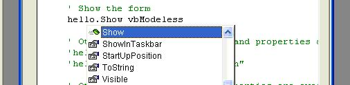

Overview
Creating a Hybrid Application involves developing in both the Visual Basic 6 and Visual Studio .NET IDEs. First, InteropForms must be created in Visual Studio .NET and registered for use in Visual Basic 6 via a COM interface. When that is complete, working with InteropForms via the COM interface should feel just like working with Visual Basic 6.0 forms.
Coding Against InteropForms in Visual Basic 6.0
Your custom InteropForm type and all of its properties and methods are exposed via Intellisense:
Custom InteropForm type:

Parameterized constructors appear as Initialize methods:

Common Form methods and properties are visible along with any custom members:

Building a Hybrid Application
Because the code that makes up a Hybrid Application is written in both .NET and Visual Basic 6.0, you must take some extra steps to build and debug your code. When building an application, .NET pieces must be built first and registered for Visual Basic 6.0 to reference. The Visual Basic 6.0 project can then reference the new .NET assembly. Because of this referencing, however, the Visual Basic 6.0 IDE cannot be open while building the .NET pieces. If a Visual Basic 6.0 project is open and referencing a .NET project that is being built, an error will occur. If this happens, simply close the Visual Basic 6.0 IDE and rebuild the .NET project.